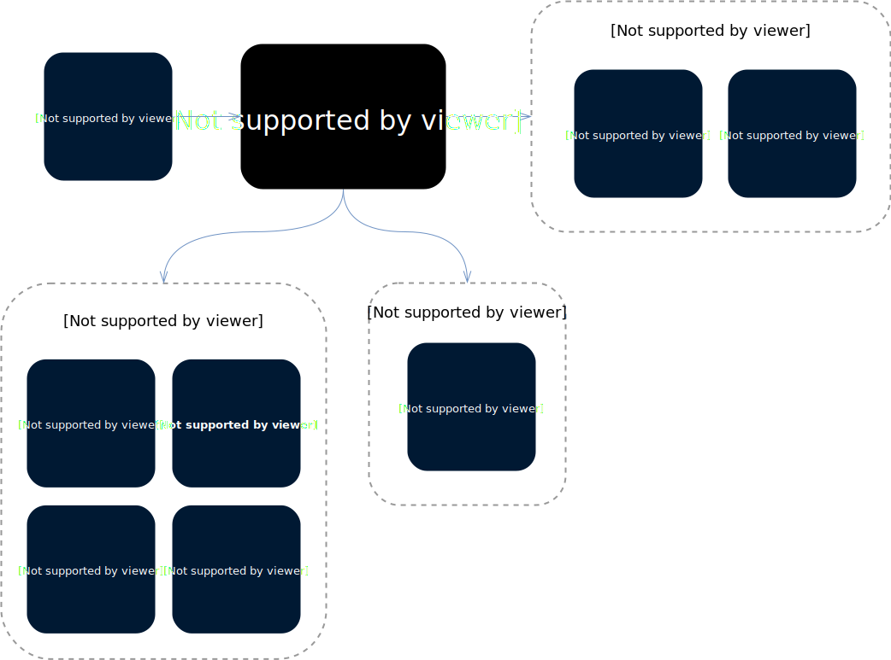
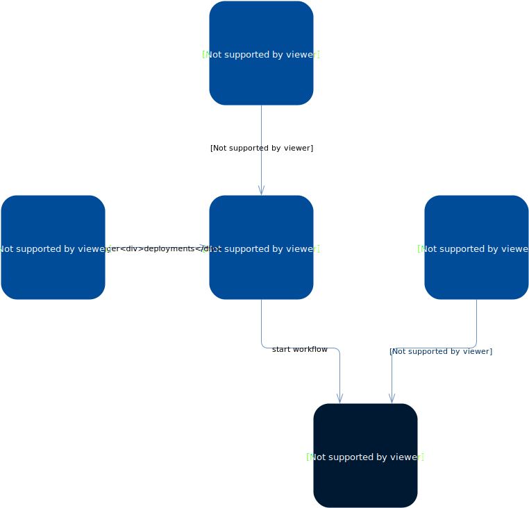
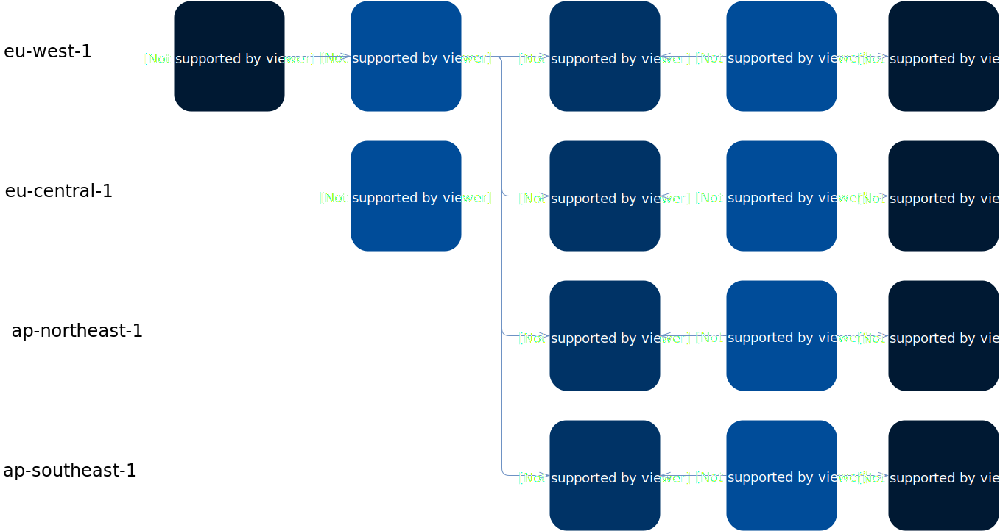

-- heading # Slingshot - What Skyscanner's deployment tool is - What it aims to become - How it fits within the rest of our enablement tools and platforms. -- heading # The Single Most Trusted App to Deliver Changes to Production -- # What Slingshot does for us Today Deploy infrastructure and services to target platforms: - infrastructure via AWS cloudformation - microservices to Kubernetes and ECS clusters - serverless workloads to AWS lambda - AWS batch jobs - state machines to AWS step functions - ... -- Slingshot in Context  -- Slingshot Components  -- ## How Slingshot Deploys Across Regions  -- # Basic Principles of Operation - Deployment definition as Code - Integrated with CI (via a Drone plugin) - Multi-region/account deployment pipelines - Metrics-based Blue/Green deployments - Notifications: Slack, webhook, metrics annotations, github commit status -- # Deployment definition as a YAML file Includes: - Service Metadata (some overlap with .catalog.yml) - Type of Deployment - Target Location: account, region, [cluster] - Configuration specific to the Deployment Type - Notification info -- Generic Slingshot fields ```yaml project: slurp # metadata serviceName: lullaby serviceType: ... accounts: # target locations: accounts and regions - name: some-account id: "838493913463" regions: [eu-west-1, ap-northeast-1] annotations: # buzzsaw annotations enabled: yes extraTags: - deploy=lullaby-deployment slack: # slack notification on_fail: yes on_complete: no webhook_url: https://hooks.slack.com/services/... channel: "#lullaby" build_author: <!subteam^lullaby-gf|@lullaby-gf> ``` -- Specific configuration based on deployment type - e.g. infrastructure: ```yaml serviceType: infrastructure supportFiles: buckets: filename: cf/buckets.yml somethingElse: filename: cf/somethingElse.yml dryRun: {{ dry_run }} stacks: - name: slurp-buckets template: $$FILES.buckets parameters: BucketSuffix: first - name: slurp-something-else template: $$FILES.somethingElse parameters: First: '$$REGION-suffix' ``` -- # Integrated with CI Specify your deployment as a Drone step: ```yaml deploy: image: 325714046698.dkr.ecr.eu-west-1.amazonaws.com/drone-plugins/slingshot-service endpoint: https://slingshot.eu-west-1.prod.aws.skyscnr.com/ custom_parameters: dry_run: yes # referenced as {{ dry_run }} in .slingshot.yml secrets: boom: ${NUCLEAR_LAUNCH_CODE} ``` -- # Multi-Region/Account Deployment Pipelines > One Slingshot to Deploy Them All Perform a **multi-service**, **multi-account**, **multi-region** deployment as a single orchestrated execution. <br/> Within a pipeline you specify what elements will be deployed where in which order. -- ## Pipeline Example ```yaml serviceType: pipeline serviceName: pipeline-demo # ... pipeline: - file: .slingshot-batch.yml # external yaml - definition: # inlined definition serviceType: ecs serviceName: pipeline-demo serviceDefinition: cluster: "{{ ecs_cluster }}" role: "" taskDefinition: containerDefinitions: - name: "hello-world" image: "tutum/hello-world" memory: 128 ``` -- ## Regional Variations You can specify variant configurations per region: ```yaml regions: eu-west-1: defaultCount: 12 ap-northeast-1: defaultCount: 6 ``` Example replacement: ```yaml # Values when deploying to eu-west-1: First: 'prefix-$$REGION-suffix' # 'prefix-eu-west-1-suffix' Second: $$META.defaultCount # 12 ``` -- ## Regional Rollouts - Choose the rollout order for regions - Combine serial and parallel regions for canary rollouts ```yaml # define regions and rollout order rollout: - accounts: ['sandbox'] regions: ['eu-west-1'] - accounts: ['slingshot-test'] regions: ['eu-west-1', 'ap-northeast-1'] pipeline: - file: .slingshot-role.yml regions: ['eu-west-1'] # regions this step will run in - file: .slingshot-k8s.yml # no filter, deploy to all regions ``` -- ## Pipelines in the wild - [Test service definitions](https://github.skyscannertools.net/raw/slingshot/test-service-definitions/master/.slingshot.yml?token=AAACA8BoSRtw2hxvx2hOq_WhWSMb1IW0ks5cpHXdwA%3D%3D) - [whostar](https://github.skyscannertools.net/raw/route-and-timetable-services/whostar-service/master/.slingshot.yml?token=AAACAw9hjQ0ggdSJIbH9UsRBoGUNgVB0ks5cpHThwA%3D%3D) - [Gateway Infrastructure](https://github.skyscannertools.net/service-routing/gateway-infra/blob/deploy-inchmoan/.slingshot.yml) - [K8s QPS clusters](https://github.skyscannertools.net/k8s/k8s-infx-cloudformation/blob/master/slingshot-pipeline-prod-qps.yml) -- ## Limitations Pipeline deployments are a first MVP, IMO an unfinished product. - There is no way to rollback a pipeline - Usability is not great (neither in definition nor in UI support) - They are not the default option in most cookiecutters - No support for selective deployments -- # Metrics-based Blue/Green and beyond - We support both OpenTSDB and Prometheus metrics, for ECS and Kubernetes blue/green deployments - Metrics checks can also be added as standalone steps in a pipeline -- heading # The Future of Slingshot -- # Single path to production With Slingshot being "the single app to deliver changes to production", we can have: - A picture of what is deployed to production, by whom - A centralised audit trail and timeline of changes - A global Disaster Recovery / Rehydration mechanism - A mechanism to control what can or can't be deployed (e.g. during an incident) - Consolidated delivery metrics -- # Extensibility Add mechanisms so that non-Slinghshot-core engineers can extend deployment workflows. - Generic workflows: webhook based custom workflows - already in beta use for Akamai configuration deployments - can be used within pipelines - could be used as validation / gating steps in rollouts (e.g. to run smoke tests) -- heading # Thanks! > Carles Barrobés & the Copper team